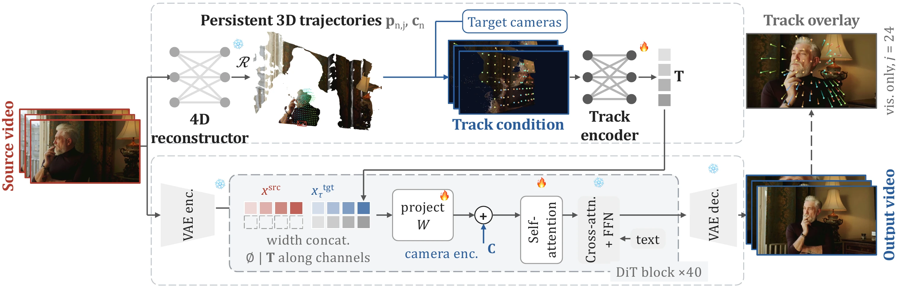

Holo4DHolistic 4D Reconstruction as
Geometric Control for Video Diffusion
NeurIPS 2026
One source video. Persistent 3D tracks. New viewpoints.
01 / Robotics
Robotics from new viewpoints
One source scene, two camera paths. Watch the result, then reveal the tracks.
Humanoid robots
Robot manipulation
About the tracks and video loading
Holo4D receives source video, camera rays and dense persistent 3D-track features carrying position, visibility, source-query RGB and target-camera depth—not rendered target RGB-D. The source-condition panel visualizes the input; it is not target ground-truth RGB. Post-generation overlays, where labelled, are display tracks estimated on generated RGB, not the model input. Use the view controls to inspect clean video or tracks.
02 / Video reshooting
The same moment. A different perspective.
One source scene, two camera paths. Selected DAVIS and Vista4D examples share this gallery; each preview interleaves clean video and 3D-track overlays. Switch views or scrub through time to inspect the result.
Geometry and visualization details
All short examples use the step-19,500 model. Native-trajectory examples use VGGT-Omega + CoWTracker geometry; DAVIS entries retain their labelled 4RC input. Desktop pairs share the exact source clip and show two different camera paths. Presentation-only jitter rejection removes unreliable displayed identities; it does not change generated RGB or model conditions. Only visible examples load MP4s; the rest show lightweight first-frame posters. Playback waits for both visible videos to buffer. The short previews use a forward/reverse presentation loop, not a longer generated sequence.
Media refresh in progress: the players below still use the previous exports until the filtered single-video batch completes. Original inference videos are unchanged.
03 / Long videos
Beyond a single video chunk
Nine selected humanoid and manipulation demonstrations, continued beyond 49 frames. Source and generated videos play together; a quiet chunk label identifies each continuation.
How are the continuations generated?
A T2V seed is continued by the 14B I2V model, conditioned on the previous generated last frame. Overlaps are deduplicated and padded tails removed. These are full-duration qualitative demonstrations, not a quantitative long-horizon motion-preservation claim.
Humanoid continuations
Manipulation continuations
04 / Baselines
Comparison with baselines
Two methods, the same requested native camera trajectory. Browse representative cases—including baseline failures—and inspect synchronized outputs.
Comparison protocol and measured speed
Holo4D uses VGGT-Omega + CoWTracker source geometry; Vista4D uses its official pipeline. Source geometry backends differ, and these examples do not imply an appearance win on every case. Camera diagnostics below are not appearance scores.
Separate matched H200 timing: Holo4D 7.39 s/denoising step versus Vista4D 9.89–9.90 s (about 25% less denoising time). Two native cases, 49 frames, 384×672, 50 steps. Excludes reconstruction/rendering and model loading; not an end-to-end or training speed claim.
The idea
Geometry meets generation.
Reconstructing a dynamic 4D scene along a novel camera trajectory requires both accurate geometry from the source video and generative completion of disoccluded target-view regions. Feed-forward 4D reconstructors recover increasingly comprehensive input-view geometry, but remain tied to the observed camera stream. Camera-controlled video diffusion models provide strong generative priors, yet their camera control is typically not precise enough for metric novel-view reconstruction.
Holo4D connects these capabilities through dense, persistent 3D tracks reconstructed from the source video. Each identity carries geometry, visibility and observed appearance. Projected track features and target-camera rays guide a pretrained video diffusion model, without requiring a rendered RGB-D conditioning branch.
How it works
Persistent tracks, generative completion.
Source reconstruction supplies persistent 3D tracks. Their features are projected into the requested camera and injected into video diffusion, alongside source video and camera-ray features.

BibTeX
@inproceedings{lan2026holo4d,
title = {{Holo4D}: Holistic 4D Reconstruction as Geometric
Control for Video Diffusion},
author = {Lan, Yushi and Jiang, Zeren and Namekata, Koichi and
Pan, Xingang and Zheng, Chuanxia and Vedaldi, Andrea},
booktitle = {Advances in Neural Information Processing Systems},
year = {2026}
}Concurrent Works
- Vista4D explores video reshooting from a monocular source video using rendered 4D point clouds as geometric guidance for video diffusion.
- Lyra-[1,2] distills a video diffusion model into an explicit, feed-forward 3D Gaussian representation for dynamic video-to-4D reconstruction; Lyra-2 extends this to long-horizon, camera-controlled walkthrough generation with per-frame geometry routing to curb spatial forgetting and temporal drift.
Acknowledgments
This research was supported by the Sony Research Award Programme 2024 and ERC CoG UNION (101001212). We thank Isambard-AI and Dawn AIRR supercomputers for supporting this project.
We also acknowledge support from EPSRC EP/Z001811/1 SYN3D.
We are grateful to Runjia Li, Zeqi Xiao, Yiming Chen, Wenqi Ouyang, Zhouxia Wang, and Minghao Chen for valuable feedback and discussions.